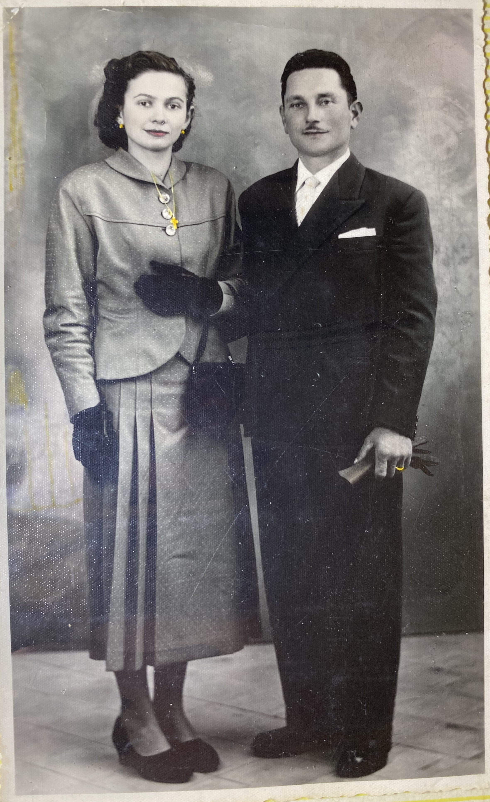
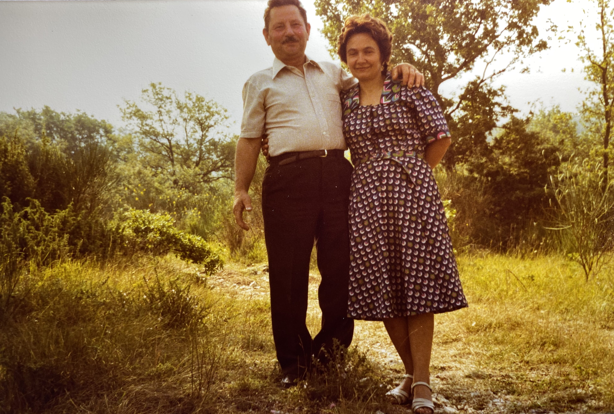
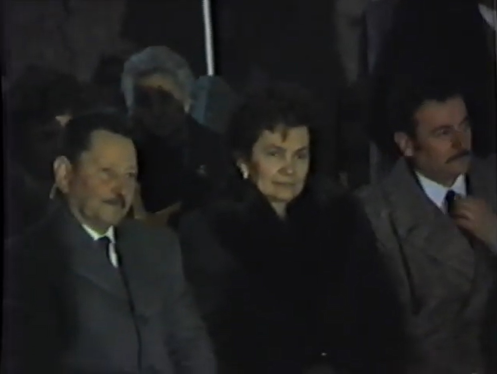
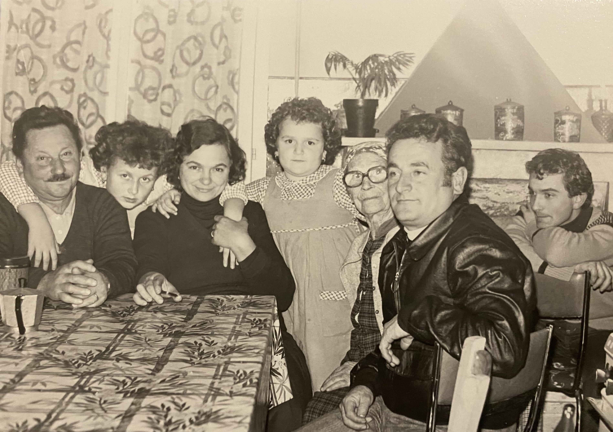
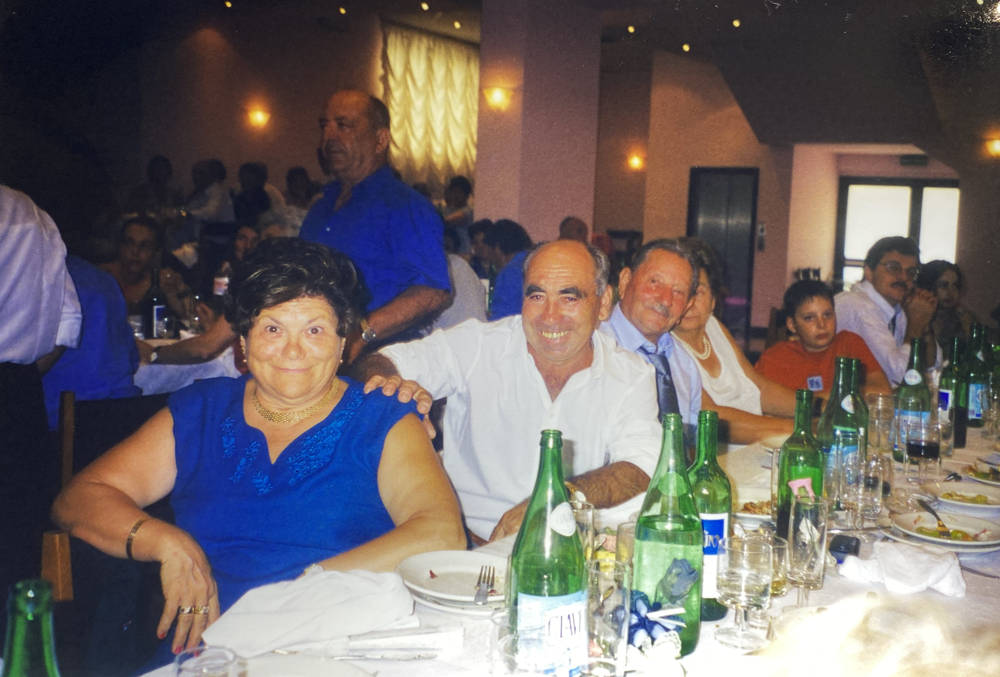
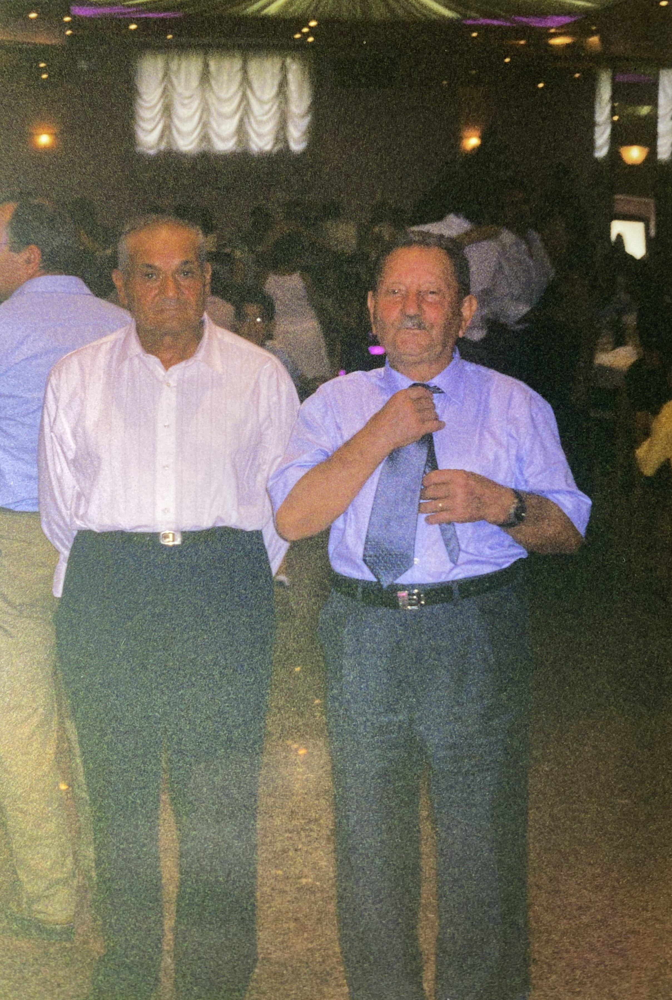

Camilluzzi, Luigi
| Nome alla nascita | Camilluzzi, Luigi |
| Genere | maschio |
| Età al decesso | 92 anni, 1 mese, 15 giorni |
Eventi
| Evento | Data | Luogo | Descrizione | Fonti |
|---|---|---|---|---|
| Nascita | 25/3/1923 | Montecastrilli, Umbria | 1a | |
|
|
||||
| Battesimo | 29/3/1923 | Farnetta, Montecastrilli, Umbria | 1a | |
|
|
||||
| Servizio militare | 1943 | 10° Regg. G. | 2a | |
|
|
||||
| Decesso | 9/5/2015 | Terni, Umbria | 3a | |
|
|
||||
| Sepoltura | Cappella di Famiglia Camilluzzi Luigi, Cimitero di Terni, Terni, Umbria | |||
|
|
||||
Genitori
| Relazione con la persona principale | Nome | Data di nascita | Data del decesso | Relazione con questa famiglia (se non per nascita) |
|---|---|---|---|---|
| Padre | Camilluzzi, Giulio | 31/3/1889 | 13/10/1963 | |
| Madre | Vaccarini, Agostina (Eugenia) | 28/8/1899 | 6/2/1991 | |
| Camilluzzi, Luigi | 25/3/1923 | 9/5/2015 | ||
| La sorella | Camilluzzi, Marsilia | 1930 | 1931 |
Famiglie
Famiglia di Camilluzzi, Luigi e Caproni, Iolanda |
|||||||||||||||
| Sposati | Moglie | Caproni, Iolanda ( * 16/8/1933 + 7/2/2016 ) | |||||||||||||
|
|||||||||||||||
| Figli | |||||||||||||||
| Nome | Data di nascita | Data del decesso |
|---|---|---|
| Camilluzzi, Vania | 2/9/1956 | |
| Camilluzzi, Graziano | 22/1/1961 |
Multimedia


×
❮
❯
1/6 - Iolanda_Caproni_Luigi_Camilluzzi_1955

2/6 - Luigi_Camilluzzi_Iolanda_Caproni_(senza_data)_a

3/6 - Luigi_Camilluzzi-Iolanda_Caproni-1987

4/6 - Camilluzzi_Mazzanti_(senza_data)_b

5/6 - Adele_Michelini_e_il_marito_Vito_Bordacchini_2002

6/6 - Giacomo_Michelini_Farnetta_e_Luigi_Camilluzzi_2002

Altri oggetti multimediali: video, pdf...

Attributi
| Tipo | Valore | Note | Fonti |
|---|---|---|---|
| Occupation | muratore | 4a |
Collegamenti web
| Tipo | Descrizione |
|---|---|
| YouTube | Esploratori della Memoria [Clic per andare] |
| FamilySearch |
Associazioni
| Persona | Relazione | Note | Fonti |
|---|---|---|---|
| Venturi, Dante | Padrino | 1a | |
| Maurini, Tersilia | Madrina | 1a |
Genealogia
Ascendenti
Riferimenti a fonti
-
Registro Parrocchiale - Battesimo di Luigi Camilluzzi (1923)
-
- Data: 1923
-
-
Diploma da Artificiere del Genio - Luigi Camilluzzi (1943)
-
- Data: 1943
-
-
Aldilàpp - Terni
-
- Data: 2024
-
-
Carta d'identità di Luigi Camilluzzi (1961)
-
- Data: 1961
-